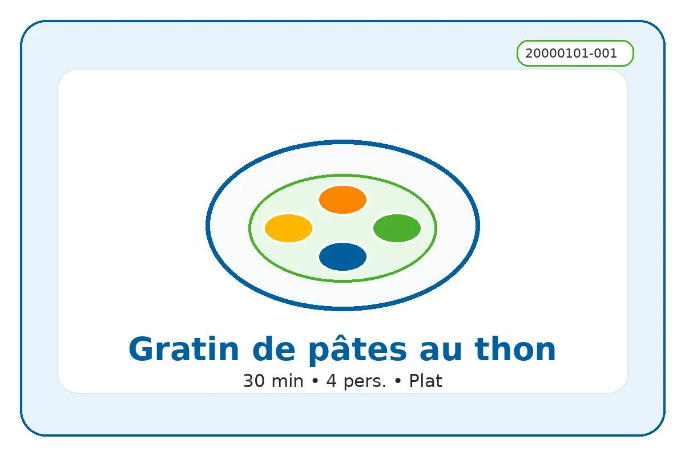

ID recette : 20000101-001
Gratin de pâtes au thon
Une recette simple et accessible : gratin de pâtes au thon.
Ce gratin permet de transformer des pâtes et une conserve de thon en plat complet. Il convient bien quand on veut préparer un repas chaud sans technique compliquée.

⚖️ Adapter les quantités
Le calcul adapte les quantités proportionnellement.
🧺 Ingrédients avec quantités
Principaux
- 320 g — pâtes
- 280 g — thon égoutté
Secondaires
- 250 ml — lait
- 100 g — fromage râpé
Optionnels
- 30 g — chapelure
- 1 c. à café — herbes
👩🍳 Préparation détaillée
- Faire cuire les pâtes dans une grande casserole d’eau bouillante salée, selon le temps indiqué sur le paquet.
- Égoutter les pâtes puis les remettre dans la casserole hors du feu.
- Ajouter le thon égoutté et émietté, puis verser le lait pour apporter du moelleux.
- Mélanger doucement pour répartir le thon sans écraser les pâtes.
- Verser le tout dans un plat à gratin, ajouter le fromage râpé et, si disponible, un peu de chapelure.
- Mettre au four à 180 °C pendant environ 20 minutes, jusqu’à ce que le dessus soit doré.
💡 Astuce anti-gaspi
Utiliser les restes compatibles pour éviter le gaspillage.
🔁 Variantes possibles
Adapter avec les produits disponibles : légumes, conserves, fromage ou féculents.
⚠️ Allergènes et conservation
Allergènes : Gluten, Lait, Poisson
Conservation : À conserver 24 h au réfrigérateur dans une boîte fermée.
Réchauffage : À réchauffer doucement si nécessaire.
Vérifiez toujours les étiquettes des produits utilisés.
🔎 Filtres associés
Cliquez sur un bouton pour trouver les recettes associées au même champ.
Sous-catégorie : Gratin
📱 QR code
QR code vers la fiche en ligne.
https://recettesducoeur.github.io/recettes/20000101-001.html
Sur mobile/tablette, seul le téléchargement PDF est proposé. Sur PC, l’impression conserve les quantités sélectionnées.